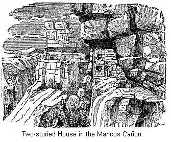

Chapter XI
THE PUEBLO COUNTRY.1
Description of the Pueblo
Country—Historical outline—Description of
Zuñi—Definition of a Pueblo—Old
Zuñi—Inscription Rock—Pueblo of
Jemez—Historical notice of Pecos —Description of the
Moqui tribes—The Estufa—Description of the San Juan
country—Aztec Springs—In the cañon of the
McElmo—The Ruins of the Rio Mancos—On Hovenweep
Creek—Description of a Cliff-house—Cliff
Town—Cave houses—Ruins on the San Juan—Cave
Town—The Significance of Cliff-houses—Moqui
traditions—Ruins in Northern New Mexico—Ruins in the
Chaco cañon—Pueblo Bonito—Ruins in
South-western Arizona—The Rio Verde Valley—Casa
Grande—Ruins on the Gila—Culture of the Pueblo
Tribes—Their Pottery—Superiority of the Ancient
pottery—Conclusion.
HAVE hitherto been describing
people and tribes that have completely vanished. We have peered
into the mysterious past and sought as best we could to conjure
back the scenes of many years ago. The line between the known and
the unknown, between the historic and prehistoric, is not far
removed from us in the new world. Not yet four centuries have
passed since the veil was lifted, and America, with her savage
tribes of the North, and her rude civilization of the South, was
revealed to the wondering eyes of Europe. But with a knowledge of
this new land came also wondrous stories of wealth, and in
consequence an army of adventurers were soon on her shores. Then
follows a short period of war and conquest. The Indian race could
not withstand the whites. European civilization, transplanted to
America, has thriven. But whatever advance the native tribes have
made since the discovery, has been by reason of contact with the
whites.
There was no single birthplace of American
culture. Advance took place wherever the climate was mild and the
soil fertile, and thus an abundant supply of food could be
obtained. One such locality was the valley of the San Juan, in
what is now the southwestern part of the United States. It is
quite allowable to suppose that here the mild climate and
bountiful soil suggested agriculture, and with a knowledge of
this, rude though it was, a beginning was made in a culture which
subsequently excited the admiration of the Spaniards. However
that may be, we know this section contains abundant ruins of
former inhabitants. And yet again we find in this same country
the remnants of this former people, doubtless living much the
same sort of life as did their forefathers. American scholars,
with the best of reason, think this section affords the best
vantage ground from which to study the question of native
American culture. It presents us not only with ruins of past
greatness, but in the inhabited pueblos, gives us a picture of
primitive times, and invites us, by a careful study of their
institutions, to become acquainted with primitive society.
Travelers and explorers describe the scenery
of the Pueblo country as a very peculiar one. It is bleak without
being absolutely barren. The great mountain chains form
picturesque profiles, which in a measure compensate for the lack
of vegetation. No country on the face of the globe bears such
testimony to the power of running water to wear away the surface.
The rivers commenced by wearing down great cañons. They
occur here on a grand scale. The cañon of the Colorado
River, having a length of two hundred miles, and through the
whole, nearly vertical walls of rock, three to six thousand feet
in height. Nearly all the tributary streams of the Colorado empty
into it by means of gorges nearly as profound. What is true of
the Colorado is true, though in a lesser degree of the Rio Grande
and of the Pecos, as only portions of these streams are
cañon-born. But, besides digging out these cañons,
the entire surface of the country has in places been removed to
the depth of several hundred feet, leaving large extent of
table-lands, called mesas, with generally steep, or even
precipitous, sides, standing isolated here and there.
Though thus bearing evidence of more extended
rainfall, and of the action of water in the past, it is
essentially an arid country now. Most of the minor water-courses
laid down on the map are dry half of the year, or have but
scattered pools of water; so a description of the surface of the
country would tell us of deep river valleys, in many cases narrow
and running through rocky beds, in which case we call them
cañons; in other cases very wide, but having generally
precipitous sides; the country often mountainous and great
stretches of table-land, but generally dry and desolate, except
in the immediate vicinity of rivers. The river valleys themselves
are generally very fertile.
Such is the country where we are to
investigate native American culture. The history of the country
since its first occupation by the Spaniards is not devoid of
interest. It did not take the Indians of Mexico long to learn
that what the Spaniards most prized was gold, and that the surest
way to curry favor with them was to relate to them exaggerated
stories of wonderful wealth to be gained in distant provinces.
About 1530 the viceroy of New Spain (Mexico) learned from an
Indian slave of seven great cities somewhere to the north; and of
their wealth it was said they had streets exclusively occupied by
workers in gold and silver.
Though expeditions to the northern provinces
of Mexico speedily dispelled the illusions in regard to them, the
wonderful story of the Seven Cities flitted further north. Six
years later these stories were invested with new life by the
arrival in Mexico of Cabeza De Vaca and three companions. The
story of their remarkable wanderings reads like an extract from a
work of fiction. They were members of the unfortunate Spanish
expeditions to the coast of Florida in 1528. After the shipwreck
and final overthrow of the expedition, these four men had
wandered from somewhere on the coast of the Gulf of Mexico, first
north, and then west, passing through, probably, portions of
Texas and New Mexico, until finally they were so fortunate as to
meet with their own countrymen near Culiacan, in Mexico. The
story they had to tell fell on willing ears. They stated to the
viceroy that they had carefully observed the country through
which they had passed, and had been told of great and powerful
cities containing houses of four and five stories, with the usual
accompaniments of great wealth.
The next incident was the journey of three
Franciscan friars and a negro (who, by the way, had been with De
Vaca in his wanderings), sent out by the Governor Coronado, with
orders to return and report to him all they could learn by
personal observation of the Seven Cities. This expedition did not
accomplish much. Arriving near Cibola (the Spanish name for the
country of the Seven Cities), they sent the negro on ahead to
gain the good will of the Indians. Instead of this, he was killed
by them. On hearing which, the monks contented themselves with
gazing on the pueblo (which they describe as "more considerable
than Mexico") from a safe distance, and then hurriedly returned
to Culiacan. They gave Coronado a most glowing account of all
they had discovered.
Coronado now thought the time had come for
decisive action. Accordingly, with the viceroy's permission, he
organized his forces, and in 1540 set out on his memorable march
in search of the Seven Cities of Cibola. We do not propose to
give in detail the series of conquests beginning with this
expedition and finally ending with the subjection of New Mexico
in 1598. It is needless to say that the Spanish forces found no
cities teeming with wealth. What they did find was a country much
the same as at present. The cities were the communal houses, or
combination of houses, known as pueblos. The pueblo of
Zuñi is the remaining one of the mystical seven. The ruins
of at least six other pueblos are known to be in the immediate
vicinity.2
This historical account, short and imperfect
as it is, introduces us to a most interesting people. If we would
know more of them we can not do better than to adopt the advice
of Hosta, ex governor of Jemez, to Dr. Loew: "If you wish to see
what a great people we once were you must go upon the mesas and
into the cañons of the vicinity, where ruins of our
forefathers are numerous."
One of the most important pueblos yet
remaining inhabited, and one of the first that Coronado
encountered in his expedition, is Zuñi. The present pueblo
is considered as the remaining one of the Seven Cities—at
least, by the majority of Americanists. Whipple describes
Zuñi as follows: "Treading an opening between rocky
bluffs, . . . we entered the valley, several miles in width,
which leads to Zuñi. The soil seemed light, but where
cultivated it produced fine crops without the aid of irrigation.
. . . Within the valley appeared occasional towers, where herders
and, laborers watch to prevent a surprise from Apaches. Near the
center of this apparent plain stood, upon an eminence, the
compact city of Zuñi.3 By
its side flowed the river which bears the same name. It is now
but a rivulet of humble dimensions, though sometimes said to be a
large stream. . . . Passing beneath an arch, we entered a court,
. . . entirely surrounded by houses of several receding stories,
which were attained by means of ladders loading from one to
another. . . . From the top the pueblo reminds one of an immense
ant-hill, from its similar form and dense population. . . . Going
down from its outer side into the street, we encounter five
stories of descent."4
In order to prevent confusion, we will state
that a pueblo, which is the Spanish name for these old Indian
towns, may be one of several different types. A common form of
village consists of but one or two, seldom three, large
buildings, so arranged as to surround an interior court.
Sometimes there is but one large building, which is nearly in the
shape of a half circle; instead of being really circular, it has
a number of different sides. In some cases a village consists of
a number of these large houses irregularly arranged. But the
tendency is always to inclose a square.5
In the modern villages the buildings forming
the square do not meet, but in some cases are connected by
bridges or covered gangways, and in some instances the houses
project over the streets below, which, being narrow, are thus
given an underground appearance.6
The
buildings, or communal houses, for one house contained sometimes
five hundred rooms, are generally from three to four hundred feet
long and about one hundred and fifty feet in width at the base.
The lower story is divided by cross-walls into a mass of
cell-like rooms, as shown in the illustrations which represents
the ground plan of a pueblo having four ranges of rooms. Each
story in height has one less range of rooms, so that, looking
directly at the end of this building, it would present the
appearance shown by this cut: The only means of getting from one
terrace to the other is by the aid of ladders. In some cases
these terraces run from both sides of the building; in others
they face the inclosed space; and in others still they face
outside. Most of the inhabited pueblos are built of
adobe—that is, sun-dried bricks. The majority of the
ancient ruins were built of stone set in adobe mortar. With this
digression, we will now return to Zuñi.
Ruins testifying to the former greatness of
these people are scattered around them. Three miles to the east
of the present pueblo of Zuñi, on the bluff seen in the
cut, are the ruins of a larger pueblo, which is called Old
Zuñi. Mr. Whipple, who explored this field of ruins, thus
describes his visit: "The projecting summit of the cliffs seemed
inaccessible. . . . We followed a trail which, with great labor,
had been hammered out from seam to seam of the rocks along the
side of the precipice. At various points of the ascent, where a
projecting rock permitted, were barricades of stone walls, from
which the old man7 told us they
had hurled rocks upon the invading Spaniards. Having ascended one
thousand feet, we found ourselves upon a level surface, covered
with thick cedars. . . . The top of the mesa was of an irregular
figure, a mile in width, bounded upon all sides by perpendicular
bluffs. . . . The guide hurried us on half a mile further, where
appeared the ruins of a city, indeed. Crumbling walls, from two
to twelve feet in height, were crowded together in confused
heaps, over several acres of ground. . . . Upon examining the
pueblo, we found the standing walls rested upon ruins of greater
antiquity.8 The primitive
masonry, as well as we could judge, must have been about six feet
thick. The more recent was not more than a foot or a foot and a
half, but the small sandstone blocks had been laid in mud mortar
with considerable care."9
The descriptions of ruins have so much that is
similar that repetitions become tiresome. We will not, therefore,
delay much longer with Zuñi. A few miles east of Old
Zuñi we come to Pescado Springs, near which are the ruins
of several pueblos. "This spring bursts from a broken point of
the lava bed, and at once becomes a pretty stream, glittering
with great numbers of the finny tribe, which gives name to it.
The circular wall which once inclosed the fountainhead is now
partly broken down. Upon each side, and almost tangent, are ruins
of pueblos so ancient that the traditions of present races do not
reach them. They are nearly circular in form, and of equal
dimension. One measured three hundred and fifteen short paces,
about eight hundred feet, in circumference. They were of stone;
but the walls have crumbled, leaving only a heap of rubbish."10
Following up this stream, other ruins were
found. It seems, then, that in the pueblo of Zuñi we have
left a pitiful remnant of a numerous people. When the Spaniards
first appeared on the scene they were apparently prosperous. The
rapid decrease of the Pueblo tribes was owing to several causes.
In 1680 they made an attempt to throw off the Spanish yoke. At
first this was successful. But inter-tribal warfare at once set
in. At this time also the inroads of the Apaches and Navajos
became so troublesome that the Pueblo tribes could not
successfully cultivate their land. At this time also a succession
of dry years set in, and famine was the result. Their customs and
manners we will describe in another place. There are many reasons
for supposing that the country had been inhabited for a very long
period, even before the Spaniards invaded it. Some places must
have been even then in ruins, or, if inhabited, it is very
strange that the Spanish records do not mention them. Such, for
instance, is Inscription Rock, about fifteen miles east of Old
Zuñi, which the Spaniards must have passed when on their
way back and forth to Zuñi.
The small mesa here ends with a bold front of
white sandstone rock, rising almost vertically two hundred and
fifty feet high. This cut gives us a view on the top of the
table-rock. We see here the foundations of two old buildings. A
deep ravine nearly divides this little plateau into two portions.
As we have said, this rises with a bold, precipitous front from
the plain. At one place this front is completely covered with
inscriptions. Here the Indians, unknown years ago, made their
strange hieroglyphics which, presenting to our eyes only a
senseless combination of forms of animals and men and meaningless
figures, may have conveyed to them knowledge of important events.
A great many Spanish inscriptions have also been carved on the
rock. Whipple calls attention to the fact that though Spanish
inscriptions placed there nearly two hundred years ago, seem but
slightly affected by atmospheric action, still some of the Indian
hieroglyphics are "almost wiped out by the fingers of time." A
number of centuries have probably rolled away since they were
inscribed.
It may be interesting to know the reading of
some of these old inscriptions. A translation of one of the
earliest and longest is here given, with the exception of a few
words which could not be made out: "Bartolome Narrso, Governor
and Captain-general of the province of New Mexico, for our lord,
the king, passed by this place on his return from the pueblo of
Zuñi, on the 29th of July, of the year 1620, and put them
in peace, at their petition, asking the favor to become subjects
of his majesty, and anew they gave obedience; all of which they
did with free consent, knowing it prudent as well as very
Christian, . . . to so distinguished and gallant a soldier,
indomitable and famed; we love . . ."11
It is somewhat strange to meet thus in the
interior of the United States with the record of a military
expedition some months before the Puritans landed at Plymouth.
There seems to be nothing especial to describe about the ruins.
Both Simpson and Whipple notice that the masonry seems to be
unusually good. As it must have been very difficult to procure
water, the location must have been chosen solely for the
protection it afforded. The early Spanish accounts contain the
names of one hundred and twenty-six pueblos. Some are, however,
mentioned two or three times. Mr. Bandelier has succeeded in
identifying every one. The Rio Puerco Valley was never a very
prosperous one, and the river is scarcely a permanent one. At
present a few ruins at Poblazon, for instance, are to be seen,
and the valley looks poor and barren.
The valley of the Rio Grande River was
occupied by a number of Pueblo tribes, and there are at present
eight inhabited pueblos along this river, in New Mexico, and one
in Texas. The region around Bernalillo was a prosperous section.
At intervals, up and down the river, and along its tributaries,
we can still trace low crumbling ruins, evidence of an old
pueblo. If the statements of the Spanish writers are to be
believed, the number of inhabited towns, at the time of the
conquest, was at least ten times that now existing. The
population could never have exceeded forty thousand. At present
it contains about nine thousand. Still making all allowance for
Spanish exaggeration, we are convinced that it was a thickly
populated country at the time of the conquest.
One of the most interesting pueblos in New
Mexico is Jemez, on a river of that name, sixty miles west of
Santa Fe. We speak of it here because it is the center of a most
interesting group of ruins. Like the pueblo of Zuñi, it is
a remnant only of a prosperous people. The reports of Coronado's
expedition frequently mention Jemez, though it may be doubtful
whether they refer to the pueblo of that name now, or to one of
the numerous ruined ones in the immediate vicinity. Jemez is a
prosperous pueblo, having fine fields, large irrigating ditches,
and extensive flocks of sheep.
Simpson describes it in 1849 as follows: "The
pueblo of Jemez is an Indian town of between four and five
hundred inhabitants, . . . and is built upon two or three
parallel streets, the houses being of adobe construction, and
having second stories disposed retreatingly upon the first, to
which access is had by means of ladders. . . . About the premises
are probably a dozen acres covered with apricot and peach trees.
. . . The Rio de Jemez, upon which the pave lies, is an affluent
of the Rio Grande, varies from thirty to fifty feet in breadth,
is of a rapid current. . . . Patches of good corn and wheat skirt
it here and there along its banks, and the extent of cultivable
land bordering it may be estimated at about a mile in
breadth."
We are more interested, however, in ruins
testifying to past greatness. "Six miles up the river you come to
the union of two cañons—the Guadalupe and San Diego.
Where the mesa between these cañons narrows itself to a
point, are the ruins of two pueblos, one upon the lower
prominence of the mesa, the other upon the mesa proper, and only
approachable by two narrow, steep trails, the mesa everywhere
else being nearly perpendicular, and seven hundred and fifty feet
high. The view from the mesa is picturesque and imposing in the
extreme. Far beneath, to the right and left, a stream makes its
way between the colossal walls of the sandstone upon the narrow
width of the mesa; near frightful precipices are the ruins of a
town of eighty houses, partly in parallel rows, partly in
squares, and partly perched between overhanging rocks, the rim
and surfaces of which formed the walls of rooms, the gaps and
interstices being filled in artificially."
"Nearly every house had one story and two
rooms. The building material was trachytic rock as found upon the
mesa. Broken pottery, charred corn, and millstones for grinding
corn, were found in some of the rooms. The roofs had all fallen
in, and so also had many of the side walls, in the construction
of which wood was but little used. Piñon trees have taken
root within many of the former rooms. Upon asking my Indian guide
whether the former inhabitants of this town were obliged to
descend the steep and dangerous pathway every day to the creek to
procure water, he replied there were cisterns upon the mesa, in
which rain, formerly plentiful, was caught. He then called my
attention to some conical heaps of stones along the rim of the
precipice which was the material for defense."12
This description introduces us to another
class of ruins—that is, detached separate houses, different
from the great communal structures we have already described.
What connection exists between these two forms of houses will be
studied in another place. As a rule, the rooms in the detached
houses are larger than in the communal houses. Exceptions occur
in some of the inhabited pueblos.13 This is only one of many towns in
ruins thereabouts. According to Dr. Loew there are no less than
twenty-five or thirty.
It is not our purpose to describe any more of
the pueblos of this section of New Mexico than is required to
enable us to understand the customs, manners, and habits of the
Pueblo tribes. We learn that in New Mexico we are brought face to
face with feeble remnants of former tribes, and that these were
probably in their most flourishing condition when the Spaniards
first invaded the country, and though in a few instances the
ruins imply a great antiquity, as at Inscription Rock, still we
may be reasonably sure that the majority of them date but a few
centuries back. The ruins of Catholic churches established by the
Franciscan monks in the sixteenth century occur in several
places, five being found around Jemez.
The story of the decline of the Pueblo tribes
may be illustrated by the history of Pecos. This pueblo was
situated on the Rio Pecos, about twenty-five miles south-east of
Santa Fe. With the exception of the present inhabited town of
Taos, it was the most eastern point reached by the pueblo
building tribes. This, though a very large pueblo, has nothing
especial to attract attention, except that the entire mesa was
inclosed by a stone wall about six feet and a half high, and
twenty inches thick, having a total length of three thousand, two
hundred and twenty feet.14 Its
history is, however, interesting and instructive. Coronado, with
his army, visited Pecos before he abandoned the country in 1543.
His reports mention it as a prosperous pueblo. Several raids were
made into New Mexico by Spanish parties, but the conquest proper
occurred in 1598, when the Pecos pledged fidelity to the crown of
Spain.
The Catholic Church at once set about
establishing missions at various pueblos. The Pecos Church was
established in 1629, though missionary work had been done here
before that time. One of the priests who accompanied Coronado
remained behind at Pecos. He was never afterwards heard from.
This church became one of the most renowned in New Mexico. The
inhabitants became herders as well as agriculturists. It was
prosperous. In 1680 the Pueblo of Pecos sheltered two thousand
Indians. "But a storm was brewing from whose effects the Pueblo
tribes never recovered." In 1680 the Indians rose against the
Spanish and drove them from New Mexico. The priests were
murdered, the churches were sacked. From this time doubtless date
the ruins of the churches seen around Jemez. At Pecos and many
other places intertribal warfare set in. Bloody battles were
fought.
Neither were the Spaniards idle. In 1682 one
expedition was made, and at least two pueblo towns were destroyed
by them. In 1689 the entire country was reconquered. Some tribes
were nearly exterminated, and all more or less weakened and a
great many ruins date from that time. It was the beginning of a
decline for the Pueblo tribes, and this decline was hastened by
intertribal warfare, by drought, and by ravages from wild
Indians. As to the drought, it is sufficient to state that some
ruins are now fifteen, and even twenty, miles from permanent
water. The Comanches were the scourge of the Pecos. On one
occasion they slaughtered all the young men but one. This was a
blow from which they never recovered. Finally reduced by sickness
to but five adults, the Pecos sold their lands and, at the
invitation of their brethren at Jemez, went to live with them,
and the pueblo of Pecos speedily became the ruins we now find
it.15
No doubt a similar history could be written of
many other ruins. "Our people," said Hosta, "were a warlike race,
and had many fights, not only with the Spaniards, but also with
other Indian tribes the Navajos and Taos, for instance and were
thus reduced to this pueblo of Jemez, which now forms the last
remnant." New Mexico is now becoming rapidly "Americanized," and
it will soon be brought to a test whether the Pueblo tribes can
withstand this new influence and retain their peculiar
civilization, or whether, like many other races, their life force
is nearly spent, in which case they will live only in
history.
We must not overlook the Moki Pueblos in
Arizona. They are situated one hundred miles northwest of
Zuñi. The Spaniards discovered them, and called their
province Tusayan. They are much like the Pueblo tribes of New
Mexico, only they have been much less disturbed by outside
influence. There are a number of ruined towns in this vicinity.
We wish to refer to them because of their intimate connection
with the ruins to the North. Their houses are built of stone on
precipitous mesas.
Lieut. Ives, who visited them in 1858, has
left quite a full description of them. He states that "each
pueblo is built around a rectangular court, in which, we suppose,
are the springs that furnished the supply to the reservoirs. The
exterior walls, which are of stone, have no openings, and would
have to be scaled or battered down before access could be gained
to the interior. The successive stories are set back, one behind
the other. The lower rooms are reached through trap-doors from
the first landing. The houses are three rooms deep, and open upon
the interior court."16 He was
much pleased with the manner in which they had terraced off the
bluff of the mesas into little garden patches, irrigating them
from the large reservoirs from the top.
There is one feature common to all the Pueblo
tribes which is necessary to refer to here, from its connection
with the ruined structures further north. In all of the inhabited
pueblos there is a structure known as an Estafa, some pueblos
having several. They are usually circular, but occasionally (as
at Jemez) rectangular. They are generally subterranean, or mostly
so. They are great institutions among the Pueblos. "In these
subterranean temples the old men met in secret council, or
assembled in worship of their gods. Here are held dances,
festivities, and social intercourse."
Another common feature, represented in this
cut, is the watch-tower. It is either round, as in this case, or
rectangular. It may be interesting to recall in this connection
the signal mounds of the Mound Builders. They were not always in
the immediate vicinity of other ruins. Neither can we state that
there was a system in their arrangement, one answering to another
at a distance, and yet it was noticed where the rains were
numerous that several were in view from one point.17 In dimensions these towers range from
ten to fifteen feet in diameter, and from five to fifteen feet in
height, while the walls are from one to two feet thick. They are
in many cases connected with structures rectangular in form.
We will now leave the inhabited pueblos and
the ruins in their immediate vicinity and, going to the north,
explore a section of country that shows every evidence of having
sustained a considerable population some time in the past. To
understand this fact clearly, it will be necessary to fix the
location of the places named by means of the map. From time to
time confused reports of the wonders to be seen in the San Juan
section of Colorado had appeared in the East, but the first clear
and satisfactory account is contained in the reports of Messrs.
Jackson and Holmes, members of the U.S. Geographical and
Geological survey of the territories under Dr. Hayden for 1874
and 1876.
In the south-western portion of Colorado is a
range of mountains known as the San Juan. Stretching from their
base west to the Sierras is a great plateau region, drained by
the numerous tributaries of the San Juan River. It would,
perhaps, be more in keeping with the facts of the case to say
"had been drained some time in the past," for this is now such an
arid, semi-desert country that the majority of the streams are
dry, or have but scattered pools of water in them, during a large
portion of the year; and yet, at times, great volumes of water go
sweeping through them. This whole plateau is cut up with long,
cañoned valleys, presenting, in effect, the same surface
features that we have already described in New Mexico. Yet this
precipitous, cañon-marked section of country is literally
filled with the crumbling ruins of a former people. The situation
in which they occur is in many cases very singular, and the whole
subject is invested with great interest to us, because we see in
them the remains of a people evidently the same as the Pueblo
people to-day.
One of the most extensive ruins in this
section is situated at Aztec Springs. This, it will be seen, is
about midway between the Rio Mancos and the McElmo. Mr. Holmes
found the site of the spring, but it contained no water. He was
told, however, by those familiar with the locality that there had
been a living spring there up to within a few years. It was
evidently a place of considerable importance once. Mr. Holmes
describes the ruins as forming the most imposing pile of masonry
found in Colorado. They cover an area of over ten acres. This
includes only the ruins around the springs. But all about this
central portion are scattered and grouped the remnants of smaller
structures. So that nearly a square mile is covered with the
ruins of this ancient pueblo. Most of the stone used was brought
from the Mesa Verde (Green Plateau), a mile away, and must have
been a great work for a people so totally without facilities.
It
will be seen that immediately to the right of the Springs is a
large rectangular ruin in better preservation than the rest. This
now "forms a great mound of crumbling rock from twelve to twenty
feet in height, overgrown with artemisia, but showing clearly,
however, its rectangular structure, adjusted approximately to the
four points of the compass." This house, from its massive walls,
must have had an original height of at least forty feet. "The
walls seem to have been doubled, with a space of seven feet
between; a number of cross-walls at regular intervals indicate
that this space has been divided into apartments, as seen in the
plan." Two low lines of rubbish cross the square, probably
partition walls.
Surrounding this house is a net-work of fallen
walls, so completely reduced that none of the stones seem to
remain in place. Mr. Holmes was at a loss to know whether to call
them a cluster of irregular apartments, having low, loosely built
walls, or whether they are the remains of imposing pueblos. In
the group of ruins to the left of the spring are two well-defined
circular estufas. Below the main mass of ruins, connected by low
walls of ruins, is another great square, nearly two hundred feet
in dimensions. One wall seems to have consisted of a row of
apartments; the other walls served to simply inclose the square,
near the center of which was another large estufa.
Several important conclusions can be drawn
from a study of this locality. The spring, now dry, was once
evidently the source of a considerable stream. Whether the group
of low ruins were collections of small houses, or remains of
imposing pueblos, we need not doubt that the walls of the square
inclosures were composed of pueblo houses. The estufas were
probably in all respects similar to those of the present
inhabited pueblos. The country around, now so dry and barren,
must once have supported considerable population. As to the
period of abandonment, we have nothing to guide us. Being an
agricultural settlement, it was probably abandoned at an earlier
date than the cave-dwellings and cliff-houses of the
cañons of the vicinity. The reason for this will appear
subsequently. The site of this ruin, as well as for a long
distance around, is covered with pieces of broken pottery. We
notice that the spring has only lately gone dry. This illustrates
the changes now taking place all through the country. It is
drying up, and this process has been in operation for a long
while.
Many groups of ruins are now in localities where the
people could not hope for subsistence. About six miles to the
north of these ruins, about a mile from the McElmo, is the group
of ruins here represented, which may throw some light on the
remains at Aztec Springs. The principal feature is the triple
walled tower, of which a plan is given. The tower has a diameter
of about forty-three feet, and a circumference of about one
hundred and thirty-five feet. The walls are traceable nearly all
the way around, and the space between the two outer ones, which
is about five feet, contains fourteen apartments or cells. The
walls about one of these cells were still standing at the time of
Mr. Holmes's visit, but the cell was filled with rubbish from the
fallen walls. A door-way, opening into this apartment, could
still be seen. The inner wall was probably never very high. It
simply inclosed the estufa.
The ruins surrounding this tower consist of
low, fallen walls, scarcely traceable. The apartments number
nearly one hundred, and were generally rectangular. They are not
of a uniform size, and were certainly not arranged in regular
order. Now, as Mr. Holmes observes, it would certainly seem that,
if they are the ruins of such structures as the pueblos of the
south, there would be some regularity of size, and some
systematic arrangement. He says that, in reality, they are more
like a cluster of pens, such as are used by the Moqui tribes for
keeping sheep and goats.
Since these surveys were made, Mr. Bandelier,
as agent for the Archæological Institute, has made
important researches. He finds that the small, detached houses,
such as we described in the ruined village near Jemez, are found
in Arizona, with a small court-yard or inclosure attached to
them. If we understand the description of the ruins just
mentioned, and those at Apache Springs, they are villages of
these small houses and their inclosures. In such villages the
inclosures meet each other, so as to form a checker-board of
irregularly alternating houses and courts. The houses are easily
discernible from the fact of little rubbish mounds having
accumulated where they stood. Around these parts of the wall can
still be traced. This combination makes a strong, easily defended
position. Each of such villages contains one or more open spaces
of large size, but they are irregularly located.
We must notice one point more: Each village of
this nature, that was of any size, contained a larger ruin in the
center. This was noticed in the ruins at Aztec Springs. This
larger building was in the nature of a citadel, and there the
inhabitants could retire when the approaches were carried by the
enemy. This central building ultimately swallowed up all the
others, and so developed into the pueblo structures we have
noticed. The little walled inclosures surrounding the houses were
largely in the nature of defenses. Tradition asserts that in many
cases they were garden plats, and appearances sometimes confirm
this. "They may also have been the yard proper for each family,
in which the latter slept, cooked—in fact,
lived—during the heat of the Summer months."18
Referring once more to the ruins near the
McElmo, we are told that every isolated rock and bit of mesa
within a circle of miles of this place is strewn with remnants of
ancient dwellings. We presume these were small, separate houses.
They may have been outlying settlements of the tribe whose main
village was at Aztec Springs. We must also notice the small tower
in the corner. This was a watch tower. It was fifteen feet in
diameter, walls three and a half feet thick, and in 1876 was
still five feet high, It overlooked the surrounding country. The
rainfall in the past must have been more abundant, to support the
population we are justified in thinking once lived there. The
nearest water is now a mile away, and during the dry season some
fifteen miles to the north, in the Rio Dolores, and yet we have
every reason to believe these old inhabitants were very saving of
water. They built cisterns and reservoirs to store it up against
the time of need.
We give a cut of the tower of the ruins of a similar village, or
settlement, to the one just described, which occurs twenty miles
to the southeast in the cañon of the Rio Mancos. Being so
similar, we will mention it here. In this case the tower had only
two walls. Mr. Holmes says the diameter of the outer wall is
forty-three feet, that of the inner twenty-five feet. The space
between the two circles is divided by cross-walls into ten
apartments. This tower is placed also in the midst of a group of
more dimly marked ruins or foundations, extending some distance
in each direction from it. Mr. Holmes, however, states that there
are no ruins of importance in connection with this tower, but
that there are a number of ruins in the immediate vicinity. In
this case, then, the citadel (if such it was) was not directly
connected with other ruins.
The Rio Mancos, that we have just mentioned,
was a favorite place of resort for these old people. This stream,
rising in the La Platte Mountains, flows through beautiful
valleys to a great table-land known as the Mesa Verde. Mr.
Jackson explored this valley in 1874, and he reports as follows:
"Commencing our observation in the park-like valley of the
Mancos, between the mesa and the mountains, we find that the low
benches which border the stream upon either side bear faint
vestiges of having at some far away time been covered with
dwellings, grouped in communities apparently, but so indistinct
as to present to the eye little more than unintelligible mounds.
By a little careful investigation, however, the foundation of
great square blocks of single buildings and of circular
inclosures can be made out, the latter generally of a depressed
center, showing an excavation for some purpose."
From this description we can not quite make
out whether these ruins are great communal buildings, like the
modern pueblo, or clusters of separate houses. We incline to the
latter opinion, however. The circular depressed area was
doubtless used as an Estufa, the place of religious meetings for
men alone. "The greater portion of these mounds are now overgrown
with artemisia, pinion-pine, and cedar, concealing them almost
entirely from casual observation." "We found the surest
indication of their proximity in the great quantity of broken
pottery which covered the ground in their neighborhood. The same
curiously indented, painted, and glazed ware, was found
throughout New Mexico and Arizona. It was all broken into very
small pieces, none that we could find being larger than a silver
dollar." Specimens of this pottery will be figured in its
appropriate place.
"Nowhere among these open plane habitations
could we discover any vestige of stone-work, either in building
material or implements. It is very evident that the houses were
all of adobe, the mound-like character of the remains justifying
that belief." In this last respect we note a difference between
these remains and those already described. The mesa verde is one
of those elevated plateaus we have so often described. Through
this the Mancos has cut a cañon nearly thirty miles in
length, and from one to two thousand feet deep. The description
we have already given is of the valley of the river before coming
to the cañon.
Entering the cañon, Mr. Jackson
continues: "Grouped along in clusters, and singly, were
indications of former habitations, very nearly obliterated, and
consisting mostly, in the first four or five miles, of the same
mound-like forms noticed above, and accompanied always by the
scattered, broken pottery. Among them we find one building of
squared and carefully laid sandstone, one face only exposed of
three or four courses, above the mass of debris which
covered every thing. This building lay within a few yards of the
banks of the stream, was apparently about ten feet by eight, the
usual size, as near as we could determine, of nearly all the
separate rooms or houses in the larger blocks, none larger, and
many not more than five feet square. The stones exposed are each
about seven by twelve inches square, and four inches thick, those
in their original position retaining correct angles, but, when
thrown down, worn away by attrition to shapeless bowlders."
"As we progressed down the cañon the
same general characteristics held good. The great majority of the
ruins consisting of heaps of debris a central mass
considerably higher and more massive than the surrounding lines
of sub-divided squares. Small buildings, not more than eight feet
square, were often found standing alone apparently, no trace of
any other being detected in their immediate neighborhood." We
would call especial attention in this description to the
character of the ruins, the central, higher mass surrounded by
other ruins; also to the houses found occasionally standing
alone. We notice they are of the same general character as the
ruins at Aztec Springs.
We are finding abundant evidence that this
section was once thickly settled. Going back to the triple-walled
tower on the McElmo, Mr. Jackson says of the immediate vicinity:
"On the mesa is group after group upon the same general plan, a
great central tower and smaller surrounding buildings. They cover
the whole breadth and length of the land, and, turn which way we
would, we stumbled over the old mound and into the cellars, as we
might call them, of these truly aborigines." We believe, however,
that no excavation for cellar purposes are found in the entire
region covered by these ancient ruins.
"Starting down the cañon (the McElmo),
which gradually deepened as the table-land rose above us, we
found upon either hand very old and faint vestiges of the homes
of a forgotten people, but could give them no more attention than
merely noting their existence."
Mr. Morgan has shown the existence of regular
large houses in the valley of Aminas River, east of the Mancos;19 and he also speaks of the ruins
at the commencement of McElmo cañon as being large
communal buildings. We should judge from Mr. Jackson's report
just given that these ruins were rather small clusters of houses
of the same design as the ruins at Apache Springs.
Near the Utah boundary line we notice the
Hovenweep Creek joining the McElmo from the north. The mesa,
narrowing to a point where the two cañons meet, is covered
with ruins much like what we have described already. The
Hovenweep is appropriately named, meaning "deserted valley."
Further west still is the Montezuma Valley.
Mr. Jackson's party found the ruins so numerous as to excite
surprise at the numbers this narrow valley must have supported.
He says, "We camped at the intersection of a large cañon
coming in from the west. . . . At this point the bottoms widen
out to from two to three hundred yards in width, and are
literally covered with ruins, evidently those of an extensive
settlement or community, although at the present time water was
so scarce (there not being a drop within a radius of six miles)
that we were compelled to make a dry camp. The ruins consist
evidently of great solid mounds of rock debris, piled up
in rectangular masses, covered with earth and a brush growth,
bearing every indication of extreme age—just how old is
about as impossible to tell as to say how old the rocks of this
cañon are. This group is a mile in length, in the middle
of the valley space, and upon both sides of the wash. Each
separate building would cover a space, generally, of one hundred
feet square; they are seldom subdivided into more than two or
four apartments. Relics were abundant, broken pottery and
arrow-points being especially plenty. At one place, where the
wash held partially undermined the foundation of ore of the large
buildings, it exposed a wall of regularly laid masonry, extending
down six feet beneath the superincumbent rubbish to the old
floor-level, covered with ashes and the remains of half-charred
sticks of juniper."
Lower down, the valley was noted for little
projecting tongues of rock extending out into the cañon,
sometimes connected with the main walls of the cañon by
narrow ledges of rock, and in cases even this had disappeared,
leaving detached masses of rock standing quite alone. "Within a
distance of fifteen miles there are some sixteen or eighteen of
these promontories and isolated mesas of different height, every
one of them covered with ruins of old and massive stone-built
structures."
We have been somewhat full in our description
of these ruins, yet their importance justifies this course. So
far we see but very little to remind us of the pueblo towns. On
the other hand, the buildings seem to be often single houses, or
a few houses grouped together. In some locations they were built
of stone, in others of adobe. It is to be observed, however, that
the houses are very small—not larger than the rooms in the
modern pueblos. We evidently have here quiet scenes of
agricultural life. They of course had enemies, and guarded
against their attacks by the watch-towers, of which an example is
given in the McElmo ruins. The country must have been better
watered than now, the soil productive the seasons kind; and who
can tell how long these agricultural tribes held the land? Under
these conditions, time must have been rapidly bringing them
civilization. But we must now turn to a sorrowful chapter in
their history, and trace the dispersion of these tribes, their
unavailing attempts to hold their own against a savage foe, and
the desperate chances they took before leaving the land of their
fathers.
This brings us to a consideration of
cliff-houses—that is, houses so placed that manifestly the
only reason the people would have for putting them where found
would be of a defensive nature; and, for a similar reason, we may
be very sure they are of a later date than the majority of the
ruins in the valley or in the cañons. People would never
have settled in the valley in the first place if they had felt
the necessity of seeking inaccessible places in which to build
shelters as a resort in time of need. We can not do better than
to refer once more to Mr. Jackson's exploration in the valley of
the Rio Mancos. We have already referred to it in reference to
the larger ruins.

This cut gives us a general view of the first
cliff-house discovered in this valley. This was far up on the
cliff. Mr. Jackson says, "We had no field-glass with the party,
and to this fact is probably due the reason we had not seen
others during the day in this same line, for there is no doubt
that ruins exist throughout the entire length of the
cañon, far above and out of the way of ordinary
observation." Subsequently Mr. Holmes proved this supposition to
be true. The sides of this cañon have nearly all their
ledges occupied by these houses.
Every advantage was taken, both natural and
artificial, to conceal them from view. "Cedars and pines grew
thickly along the ledges upon which they are built, hiding
completely any thing behind them. All that we did find were built
of the same materials as the cliffs themselves with but few, and
then only the smallest, appertures toward the cañon, the
surface being dressed very smooth, and showing no lines of
masonry. It was only on the very closest inspection that the
houses could be separated from the cliff."
 To
illustrate the singular position in which this house was located,
we introduce this cut. It is seven hundred feet above the valley.
"Whether viewed from below or from the heights above, the effect
is almost startling, and one can not but feel that no ordinary
circumstances could have driven a people to such places of
resort." As showing the difficulty an enemy would have to
approach such a house, we give Mr. Jackson's account of his climb
to it:
To
illustrate the singular position in which this house was located,
we introduce this cut. It is seven hundred feet above the valley.
"Whether viewed from below or from the heights above, the effect
is almost startling, and one can not but feel that no ordinary
circumstances could have driven a people to such places of
resort." As showing the difficulty an enemy would have to
approach such a house, we give Mr. Jackson's account of his climb
to it:
"The first five hundred feet of ascent were
over a long, steep slope of debris, overgrown with cedar,
then came alternately perpendiculars and slopes. Immediately
below the house was a nearly perpendicular ascent of one hundred
feet, that puzzled us for a while, and which we were only able to
surmount by finding cracks and crevices into which fingers and
toes could be inserted. From the little ledges occasionally
found, and by stepping upon each other's shoulders, and grasping
tufts of yucca, one would draw himself up to another shelf, and
then, by letting down a stick of cedar or a hand, would assist
the others."
"Soon we reached a slope, smooth and steep, in
which there had been cut a series of steps, now weathered away
into a series of undulating hummocks, by which it was easy to
ascend, and without them almost an impossibility. Another short,
steep slope, and we were under the ledge on which stood our
house." By referring to the first cut, we see that the house
stands on a very narrow ledge, and that the rocks overhang it so
as to furnish a roof. It will also be noticed that the ledge is
rounding, so that the outer walls of the house rise from an
incline. Piers, or abutments, had also been built along the
ledge, so as to form an esplanade.
The house itself was only about twelve feet high, but this had
been divided into two stories. Whether it ever had any other roof
than the overhanging walls of rock is doubtful. The plan is shown
in the preceding cut. The curved apartment at the right is a
reservoir, capable of holding about five barrels. A series of
pegs were inserted in the wall, so as to form a means of descent
from a window to the bottom. A number of doorways are seen in the
plan; a cut of one is presented in this figure.
We are, however, warned that the artist has
represented the stonework a little too regularly. The support for
the top of the doorway is not clearly shown; a number of small
beams of wood were laid across, on these the stones. This cut
gives us a view of the front room. Looking in from the end
window, we can see where the second story commenced. The doorway
we have been describing was not a very handy mode of entrance.
Its builders, however, did the best they could in their limited
space. The house displays perseverance, ingenuity, and taste. It
was plastered, both within and without, so as to resemble the
walls of the cañon, but an ornamental border was added to
the plastering of the interior rooms.
This cliff house could only have been used as a place of refuge
in a time of need. We must observe the care with which it was
hidden away. The walls were plastered on the outside, so as to
resemble the cañon-walls. Then we must notice what a
secure place of retreat it afforded the people. No invading party
could hope to storm this castle as long as there was any one to
defend it. This house, with its four small rooms, could give
shelter to quite a band of Indians. Then, besides, it was not
alone. Ruins of half a dozen smaller houses were found near by.
Some had been crushed by the overhanging walls falling upon them,
and others had lost their foothold and tumbled down the
precipice.
It needs but a glance to satisfy any one that
only dire necessity would have driven a people to such resorts.
When we consider how much labor it must have required to convey
the materials to the almost inaccessible place, the many
inconveniences the people must have been put to when they were
occupied, we may imagine how the people clung to their old home.
It is altogether likely that such resorts would be only used now
and then. During seasons of war and invasion probably the women
and old the men, with the little ones, went thither for
protection.
Mr. Holmes calls attention to one point
bearing on the antiquity of this ruin. The buttresses, which
probably support a balustrade, noticed in the figure on the
house, were built on the sloping surface of the rock. It would
take but very little weathering of the rocks to throw them to the
bottom of the cañon; and, furthermore, the rock is a rough
sandstone, and hence easily crumbles; and it is not well
protected by the overhanging cliff; but no perceptible change has
taken place since the buttresses were first built. The thickness
of a sheet of paper has hardly been washed from the surface, and
the mortar, almost as hard as the rock itself, lies upon it as if
placed there within a dozen years. This structure is, evidently,
not as old as the low mounds of crumbling ruins we have
heretofore described. It is more than probable that such retreats
as this were not provided until near the close of their stay in
the country.
A ruin further down the cañon,
described by Mr. Holmes, is of great interest, as it shows how
necessary the people considered it to be to construct an estufa.
It will be observed that there are two houses. So nicely are
these hidden away that Mr. Holmes had almost completed a sketch
of the upper house before he noticed the lower one. They are both
overhung by the rocks above so as to be protected from the
weather. The upper house can only be approached by means of steps
cut in the rock. It appears to be in an unfinished state, and,
when we consider the great labor required for its construction,
we can not wonder that they grew tired before its completion.
The lower house is some eight hundred feet
above the bottom of the cañon, but is comparatively easy
of approach. The interesting feature about it is the estufa. It
was situated near the center of the main portion of the house.
The entrance to this chamber shows the peculiar importance
attached to it by the builders. Mr. Holmes says: "A walled and
covered passage-way of solid masonry, ten feet of which is still
intact, leads from an outer chamber through the small intervening
apartments into the circular one. It is possible that this
originally extended to the outer wall, and was entered from the
outside. If so, the person desiring to visit the estufa would
have to enter the aperture about twenty-two inches high by thirty
wide, and crawl, in the the most abject manner possible, through
a tube-like passage-way nearly twenty feet in length."
"My first impression was that this peculiarly
constructed way was a precaution against enemies, and that it was
probably the only means of entrance to the interior of the house,
but I am now inclined to think this is hardly probable, and
conclude that this was rather designed to render a sacred chamber
as free as possible from profane intrusion." This illustrates the
peculiar regard in which it was held. Even when sore pressed by
their enemies, and obliged to flee to inaccessible heights, they
still constructed their sacred place.
These cliff-houses, of which we give
illustrations, are quite common in the Mancos. Our frontispiece shows an interesting
group, about ten miles from the foot of the cañon. These
are situated only about forty feet above the bed of the creek,
but still in a secure position. Here a bed of shale had been
weathered out of the sandstone, leaving a sort of horizontal
groove four feet high and from four to six feet deep. In this a
row of minute houses had been built. They had been made to occupy
the full height and depth of the crevice, so that when one
reaches it at the only accessible point he is between two houses,
and must pass through these to get at the others.
Besides the cliff-houses, the explorers found
that these people had made use of little cave-like openings in
the cliffs, and, by walling up the openings, had converted them
into houses. These were very common in the Mancos, and of all
sizes. Some were evidently merely little hiding places, in which
to store away provisions or other articles. In some places the
cliffs were literally honey-combed with these little habitations.
Sometimes the walls were quite well preserved and new-looking,
while all about were others in all stages of decay.
"In one place in particular a picturesque
outstanding promontory has been full of dwellings. . . . As one
from below views the ragged, window-pierced crags, he is
unconsciously led to wonder if they are not the ruins of some
ancient castle, behind whose mouldering walls are hidden the
dread secrets of a long-forgotten people; but a nearer approach
quickly dispels such fancies, for the windows prove to be only
the doorways to shallow and irregular apartments hardly
sufficiently commodious for a race of pigmies. Neither the outer
openings nor the apertures that communicate between the caves are
large enough to allow a person of large stature to pass, and one
is led to suspect that these nests were not the dwellings proper
of these people, but occasional resorts for women and children,
and that the somewhat extensive ruins of the valley below were
their ordinary dwelling places."20
On the San Juan, about ten miles above the
mouth of the Mancos, is a significant combination of
cave-dwellings and towers. In this case, about half-way up the
cliff, which is not more than forty feet high, excavations had
been made in a soft bed of shale. They are now quite shallow, but
were probably once deeper and walled up in front. Directly above
these cave-openings, on the very brink of the cliffs, were the
remains of two circular towers, in each case double-walled, and
probably divided by cross-walls into partitions. The towers were
probably their council chambers and places of worship. The caves,
directly below, down a steep bank, were their fortresses, whither
in times of danger they could flee. The little community, by
means of ladders, could freely pass from their cave resorts to
the towers and back.
The San Juan River does not seem to be as rich
in ruins as some of its tributaries. Yet near the mouth of the
Montezuma we came upon a ruin which shows considerable analogy to
the pueblos. Mr. Jackson says upon the top of the bench (fifty
feet high) overlooking the river are the ruins of a quadrangular
structure of a peculiar design. It is arranged very nearly at
right angles to the river. We see from the plan that we have the
ruins of a larger building arranged around an open court—at
least, Mr. Jackson could detect no trace of a wall in front. We
must notice the seven apartments, arranged in the form of a
semicircle, back of the court. Extreme massiveness is indicated
throughout the whole structure.
In the immediate vicinity of this ruin were
found a number of little, cave-like dwellings. They were so small
that doubts were raised as to whether they were suitable for
human habitations, but the majority of them bore ample evidence
in smoke-begrimed walls that such was their use. Twelve miles
below the mouth of the Montezuma this group of ruins was
discovered. These were situated in a cave that was almost exactly
a hemisphere in shape. Where the curve of the roof met the curve
from the bottom a little projecting bench had been utilized as a
foundation for a row of houses.
The little community that built their houses
here seem to have practised all the industries of a savage life.
In one place there was evidence that on that spot had been
carried on the manufacture of stone implements. At another place
holes had been drilled, as if for a loom. In the main building
there were fourteen rooms or apartments, ranging from sixteen to
nine feet in width. "In the central room of the main building we
found a circular, basin-like depression, that had served as a
fireplace, being still filled with the ashes and cinders of
aboriginal fires, the surrounding walls being blackened with
smoke and soot. This room was undoubtedly the kitchen of the
house. Some of the smaller rooms appear to have been used for the
same purpose, the fires having been made in the corner against
the back wall, the smoke escaping overhead. The masonry displayed
in the construction of the walls is very creditable. A
symmetrical curve is preserved throughout the whole line, and
every portion perfectly plumb. The subdivisions are at right
angles to the front. The whole appearance of the place and its
surroundings indicate that the family or little community who
inhabited it were in good circumstances, and the lords of the
surrounding country. Looking out from one of their houses, with a
great dome of solid rock overhead that echoed and re-echoed every
word uttered with marvelous distinctness, and below them a steep
descent of one hundred feet to the broad, fertile valley of the
Rio San Juan, covered with waving fields of maize and scattered
groves of majestic cotton-woods, these old people, whom even the
imagination can hardly clothe with reality, must have felt a
sense of security that even the incursions of their barbarian
foes could hardly have disturbed."21
To describe the defensive ruins on Epsom
Creek, Montezuma Creek, and the McElmo is simply to repeat
descriptions already given. We meet with cave-houses,
cliff-houses, and sentinel-towers in abundance. The whole section
appears to have been thickly settled. Further explorations will
doubtless make known many more ruins, but probably nothing
differing in kind from what is already known. We think the
defensive ruins belong to a later period of their existence than
do the old and time-worn structures we have hitherto described
along the river valleys and open plains, as at Aztec Springs.
These structures plainly show that at the time they were built
the people were subject to an invasion from a stronger foe, one
before whose approach they had to fly for protection to the
almost inaccessible cliffs.
They would obviously never have settled there
had they always had to contend with these savage tribes. It needs
no great skill to read the story of the dispersion of these old
people from the ruins we have described; the many watch-towers,
which were also used as fortresses or citadels in which to find
protection, testifying to the need of increased watchfulness. The
cave- houses and cliff-fortresses, cunningly hidden away to
escape detection, or so placed as to defy the assault of their
enemies, show to what desperate straits they were driven; and
imagination only can picture the despair that must have filled
their hearts when the hour of final defeat came, and they must
have realized that even these shifts would not allow them to stay
in the lands of their fathers.
That this is the explanation of these ruins,
we will cite the legendary stories given by an old man among the
Moquis concerning some ruins in the cañon of the McElmo,
just over the line in Utah. At this point the cañon widens
out considerably, and in the center of the valley is still
standing a portion of the old mesa, once filling the entire
valley. It is now a mass of dark red sandstone, about one hundred
feet high, and three hundred feet around, seamed and cracked, and
gradually disappearing, as the rock has gone all around it. The
top of this rock is covered with the ruins of some building;
there are also ruins at the base and all around the immediate
vicinity. There were watch towers and estufas, showing that this
was a place of great interest.
The story is as follows: "Formerly the
aborigines inhabited all this country as far east as the
headwaters of the San Juan, as far north as the Rio Dolores, west
some distance into Utah, and south and south-west throughout
Arizona, and on down into Mexico. They had lived there from time
immemorial, since the earth was a small island, which augmented
as its inhabitants multiplied. They cultivated the valley,
fashioned whatever utensils and tools they needed very neatly and
handsomely out of clay, and wood, and stone, not knowing any of
the useful metals; built their homes and kept their flocks and
herds in the fertile river bottoms, and worshiped the sun. They
were an eminently peaceful and prosperous people, living by
agriculture rather than by the chase. About a thousand years ago,
however, they were visited by savage strangers from the north,
whom they treated hospitably. Soon these visits became more
frequent and annoying. Then their troublesome neighbors,
ancestors of the present Utes, began to forage upon them, and at
last to massacre them and devastate their farms. So, to save
their lives at least, they built houses high up on the cliffs,
where they could store food and hide away until the raiders
left.
"But one Summer the invaders did not go back
to their mountains, as the people expected, but brought their
families with them and settled down. So, driven from their homes
and lands, starving in their little niches on the high cites they
could only steal away during the night and wander across the
cheerless uplands. To one who has traveled these steppes such a
flight seems terrible, and the mind hesitates to picture the
sufferings of the sad fugitives. At the 'Creston' (name of the
ruin) they halted, and probably found friends, for the rocks and
caves are full of the nests of these human wrens and swallows.
Here they collected, erected stone fortifications and
watch-towers, dug reservoirs in the rocks to hold a supply of
water, which in all cases is precarious in this latitude, and
once more stood at bay. Their foes came, and for one long month
fought, and were beaten back, and returned day after day to the
attack as merciless and inevitable as the tide. Meanwhile the
families of the defenders were evacuating and moving south, and
bravely did their defenders shield them till they were all safely
a hundred miles away.
"The besiegers were beaten back and went away.
But the narrative tells us that the hollows of the rocks were
filled to the brim with the mingled blood of conquerors and,
conquered, and red veins of it ran down the cañon. It was
such a victory as they could not afford to gain again, and they
were glad, when the long flight was over, to follow their wives
and little ones to the south. There, in the deserts of Arizona,
on well-nigh unapproachable, isolated bluffs, they built new
towns, and their few descendants, the Moquis, live in them to
this day, preserving more carefully and purely the history and
veneration of their forefathers than their skill or wisdom."22
Mr. Jackson thinks this legend arises from the
appearance of the rocks. The bare floor of nearly white
sandstone, upon which the butte stands, is stained in gory
streaks and blotches by the action of an iron constituent in the
rocks of another portion of the adjoining bluffs. That may well
be true, but we believe that there are germs of truth in the
story. Driven from their homes, where did the fugitives go? Some
of them may have gone east, but probably the body of the
migration was to the south. It has been the tendency of all
tribes, but especially of the sedentary tribes, to pass to the
south and east, and this is also the traditions among the
inhabitants of still existing pueblos.23 We find that every available portion
of New Mexico and Arizona bears evidence of having been once
populated by tribes of Indians, who built houses in all respects
like those already described. In northern New Mexico, Prof. Cope
has described a whole section of country as being at one time
more densely populated than the thickly inhabited portions of the
Eastern States. He says: "The number of buildings in a square
mile of that region is equal to, if not greater than the number
now existing in the more densely populated rural districts of
Pennsylvania and New Jersey."24
In one location he found a village of thirty
houses, built of stone, and all in ruins. He found, over a large
extent of country, that every little conical hill and eminence
was crowned with ruins of old houses. We, of course, can not say
that these ruins are necessarily younger than those to the north
of the San Juan, and yet we think from Prof. Cope's description
that they do not present such evidence of antiquity as do the
crumbling ruins previously described. And then, besides, they
were always located in easily defended positions.
The village spoken of was really a Cliff
Village, being arranged along the very edge of a precipitous
mesa, the only access to it being along a narrow causeway. Then
again, although we have described many ruins near which no water
is to be had, at least, in dry seasons, yet we have every reason
to suppose water was formerly more plentiful and easily attained.
But in this section it must always have been a serious question
with them to obtain enough water for necessary purposes. They
must have had to store away water in vessels of pottery, whose
ruins are now so abundant. It is not such a country as we would
suppose a people to choose for a place to settle in, only that
they knew not where else to go.
It is also considered settled that all the
inhabited pueblos, as well as those in ruins near the inhabited
ones, were built by the descendants of these people whose houses
we have described. This is proven by the similarity of pottery.
Though some styles of ancient corrugated ware are found in the
San Juan section not found near the inhabited pueblos, yet vast
quantities of ware, similar to that now found in the inhabited
pueblos, can be picked up all over the ruins to the north. Again,
their religion must have been the same, as ruined estufas are
common, in all respects similar to those now in use. In the
modern pueblos we are struck with the small cell-like rooms, yet
they are but little smaller than the ordinary single houses
plentifully found over the entire field of ruins. All the Pueblo
tribes are agricultural, so were these old people. In fact, all
evidence confirms the conclusion that the remnants of the Pueblo
people that we have already described, are also the descendants
of the people driven by hostile bands from north of the San
Juan.
This statement may give false impressions,
however. The traditions of the Pueblo Indians, of New Mexico, are
to the effect that they came from the north, and also that their
ancestors formerly lived in the small houses we have described.
But we do not mean to say that all the small houses and pueblos
in Arizona and New Mexico are later in date than the
cliff-houses. The pressure has always been from the north to the
south. Neither would we be understood as saying that all the
sedentary tribes, both ancient and modern, belong to the same
stock of people. There are several different stocks of people
even among the present Pueblos.25
In the valley of the Rio Chaco, about midway
between the Rio Grande and the San Juan, we meet a group of
ruined pueblos whose style of masonry is thought to indicate a
greater antiquity than the inhabited pueblo towns; these probably
indicate another settlement of these people. As these are really
remarkable ruins, we must briefly describe them. In the Chaco
cañon, as indicated on the map, within the space of ten
miles are the ruins of eight larger pueblos. Another is located
at the very beginning of the cañon, and two more on the
edge of the mesas just outside of the cañon. These are
large communal houses of regular pueblo type, and, theoretically
at least, they should be later in date than the majority of ruins
throughout the area represented on the map. We think the
development has been from small, separate houses, to a closely
connected cluster, with a central citadel, which finally drew to
itself all the other buildings, and became the communal building
we call a pueblo.26
We give a restoration of, one—the Pueble
Bonito—one of the largest and most important of the ruins.
We can not doubt but what the restoration is substantially
correct. It shows the open court, the terraced structure, and the
system of defense. The circle itself is not as near a half-circle
as we would imagine. The ground plan shows that it was really a
many-sided building. This pueblo must have presented a striking
appearance when it was in a complete state.
By comparing this structure with the views of
some of the present pueblo towns, we will understand the remarks
made earlier, as to the different styles of pueblo structures.
This building must have had not far from six hundred and fifty
rooms. "No single edifice of equal accommodations has ever been
found in any part of North America. It would shelter three
thousand Indians."27 This pueblo
will compare favorably with some of the structures of Yucatan;
though not so ornamental, yet for practical convenience it must
have met the wants of the builders fully as well. This may be
given as a fair example of the entire class.
The evident plan on which they started to
build their structures, is shown in the following plan of the
pueblo. But some of them were not fully completed. Two of them
had but one wing. In the restoration the court is seen to be
closed by a straight row of small buildings, but in most cases
the wall inclosing the court was more or less circular. In one
case the court was left open. We will only give general
descriptions. It is now believed that these great structures were
built only a part at a time; perhaps the main body, or a part of
it, first. Afterwards, as the number of inhabitants increased, a
wing would be added, and then the other; and so, many years would
elapse before the pueblo would assume its completed form.
These structures ranged in extent from about
four hundred to twelve hundred feet in external measurement and
could furnish a home to from two hundred to eight hundred or a
thousand Indians, and, in one case at least, many more.
In the next cut we have represented the
different styles of masonry employed in the pueblos of this
valley. It varied all the way from careful piling of big and
little stones, and of alternate layers of such materials, to very
good masonry indeed. Speaking of it, Mr. Jackson says, "It is the
most wonderful feature in these ancient habitations, and is in
striking contrast to the careless and rude methods shown in the
dwellings of the present pueblos. The material, a grayish-yellow
sandstone, breaking readily into thin laminae, and was quarried
from the adjacent exposures of that rock. The stones employed
average about the size of an ordinary brick, but as the larger
pieces were irregular in size, the interstices were filled in
with very thin plates of sandstone, or rather built in during its
construction; for by no other means could they be placed with
such regularity and compactness. So closely are the individual
pieces fitted to each other that at a little distance no jointage
appears, and the wall bears every indication of being a plain,
solid surface."
Besides these important ruins, there are a
great many others not especially different from those previously
described. We can not state positively that these ruins are of a
later date than those of the North; we think they are. From the
character of the structures, we are more inclined to class them
with the great pueblos of the Rio Grande, Puerco, and
Zuñi. By examining the map we see that the Rio Chaco would
afford a convenient route for them in their migration from the
San Juan Valley.
It may be of some interest to notice one of
the rooms in this pueblo. Simpson says it is walled up with
alternate layers of large and small stones, the regularity of the
combination producing a very pleasant effect. Mr. Morgan thinks
this room will compare not unfavorably with any of equal size to
be found in the more imposing ruins of the South. We must notice
the ceiling. The probabilities are that the Rio Chelly, further
to the west, afforded another line of retreat. Some ruins are
found scattered up and down the river or cañon, which we
will not stop to describe. Off to the south-west are the
inhabited towns or pueblos of the Moquis, who, as we have seen,
have a tradition that they came from the north.
There are some ruins found in the
south-western part of Arizona which must be described in a
general survey of the ruins of the Pueblo country. The river
Gila, with numerous tributaries, is the most important stream in
that portion of the State. It is in just such a section as we
would expect to find ruins, if anywhere. Coronado, as we have
seen, invaded the country about three hundred and fifty years
ago. At the time of his visit this was then a ruin, for his
historian describes one ruin as "a single ruined and roofless
house . . . the work of civilized people who had come from
afar."28 This gives us a point as
to the antiquity of some of the ruins in the Gila Valley. As we
shall see, there is every reason to suppose that this section was
at one time a thickly inhabited one.
From the similar character of the remains, we
conclude the original inhabitants to be of the same race of
people as those we have already described, but what was the exact
relation between them we can not tell, but we think a study of
the ruins will only confirm the general truth of the traditions
of the Pueblo tribes. In any one tradition there is doubtless
much that is distorted. One form in which the traditions find
expression is: "That they proceeded from the north-west to the
upper waters of the Rio Colorado. There they divided, portions
ascended by the San Juan, cañon De Chelly, or the more
easterly branches of that stream towards the center of New
Mexico. Others, passing over the waters of the Rio Verde (see
map), descended its valley to the Rio Gila."29
One hundred and fifty miles southwest of
Zuñi we notice the Verde River flowing into the Rio
Salado, and the latter into the Gila. Besides those streams,
there are other smaller ones, not marked on the map.30 Mr. Bandelier found near the
cañon del Tule an improvement on the irrigating ditches,
that was a lining of concrete; and in this section also was
noticed the ruins of both pueblos and the small houses. Near Ft.
Apache he found the ruins of the largest villages discovered in
Arizona, but we have no details of it. The valley of the Rio
Verde and Salado seems to have been a favorite resort.
As early as 1854 attention was called to ruins
in the Rio Verde. Mr. Leroux reported to Mr. Whipple that the
"river banks were covered with ruins of stone houses and regular
fortifications, which appeared to have been the work of civilized
men, but had not been occupied for centuries. They were built
upon the most fertile tracts of the valley, where were signs of
acequias (irrigating ditches) and of cultivation. The walls were
of solid masonry, of rectangular form, some twenty or thirty
paces in length, were of solid masonry, and yet remaining ten or
fifteen feet in height. The buildings were of two stories, with
small apertures or loop-holes for defence, when besieged."31
Mr. Bandelier confirms this account as to the
number of ruins. The entire valley of the Verde is filled with
ruins of every description. From the account of the valley
itself, we can see how well suited it was to the needs of village
Indians. Mr. Leroux speaks in high praise of its fertility. Wood,
water, and grass were abundant. In the neighborhood of Fort Reno
Mr. Bandelier discovered a new architectural feature of great
interest to us. This is a raised platform, on which the buildings
were supported. This raised platform is a very important feature,
as we shall learn in the ruins of Mexico and Central America. We
have already seen how it was employed by the Mound Builders.
In other words, the detached houses are seen
to form villages, with a central stronghold, and the tendency is
observed to raise an artificial foundation for this central
house, which draws into itself the surrounding houses. This is
but another modification of the same idea which, in other
sections of this area developed into the communal pueblo. Near
Tempe a still more significant arrangement was noticed. Here was
a four-sided platform, three hundred and forty feet long by two
hundred and eighty feet wide, and five feet high, supported a
second platform measuring two hundred and forty by two hundred
feet, and six feet high. Elevated platforms, as a general rule,
were not very distinct. Mr. Bandelier thinks that, owing to the
peculiar drainage of the country, these artificial foundations
were required to preserve the buildings from being swept away by
a sudden torrent. The settlement of the sedentary tribes in this
region cluster on the triangle formed by the Rio Verde, Salado,
and Gila Rivers. "This is a warm region, with a scanty rainfall,
and but little timber, and the soil is very fertile when
irrigated, and two crops a year can be readily raised. Mr.
Bandelier regards it as exceedingly well adapted to the wants of
a horticultural people, and even traces in it some resemblance to
Lower Egypt."
A very celebrated ruin on the Gila River gives
us a fair idea of what this central stronghold of the village
cluster, sometimes supported on a raised foundation, was like.
This cut is a view of the principal ruin in this section, which,
however, is only a portion of an extensive settlement, covering
some five acres in all. The building is not very large, only
fifty by forty feet, and four stories, of ten feet each, in
height, with a possibility that the central portion of the
building rose ten feet higher. The walls are built of adobe, five
feet thick at the base, but tapering slightly at the top.
This house was surrounded by a court-yard
which inclosed about two acres. Shapeless mounds, presumably the
ruins of houses, are to be seen in various parts of this
inclosure. "If the ground plan of this great house," says Mr.
Bandelier, "with its surroundings of minor edifices, courts and
inclosures is placed by the side of the ground plan of other
typical ruins, the resemblance is almost perfect except in
materials used." This settlement was separated into two
divisions. In one place was noticed a large elliptical tank with
heavy embankments, nearly eight feet deep.
As to other ruins on the Gila, Mr. Bartlett
tells us: "One thing is evident, that at some former period the
valley of the Gila was densely populated. The ruined buildings,
the irrigating canals, and the vast quantities of pottery of a
superior quality, show, that while they were an agricultural
people, they were much in advance of the present semi-civilized
tribes of the Gila." Speaking of the ruins of the Gila east of
the San Pedro River, Emory says: "Whenever the mountains did not
infringe too closely on the river and shut out the valley, they
were seen in great abundance, enough, I should think, to indicate
a former population of at least one hundred thousand; and in one
place there is a long wide valley, twenty miles in length, much
of which is covered with the ruins of buildings and broken
pottery. Most of these outlines are rectangular, and vary from
forty to fifty feet to two hundred by four hundred feet."32
It is, however, necessary to be very cautious
in judging population by the number of ancient ruins. Prehistoric
people were naturally of a roving disposition. The multitude of
ruins in Western New York is not regarded as evidence of dense
population, but they were occasioned by the known customs of the
Indians in changing the sites of their villages "every ten,
fifteen, or thirty years; or, in fact, whenever the scarcity of
firewood, the exhaustion of their fields, or the prevalence of an
epidemic made such a step desirable."33 Doubtless a similar remark may explain
the difference of opinion as to the numbers of the Mound
Builders.34 And, finally, Mr.
Bandelier concludes that the great number of ruins scattered
through New Mexico and its neighboring territories is by no means
evidence of a large population. The evidence of tradition is to
the effect that a large number of villages were successively, and
not simultaneously, occupied by the same people.35
We have about completed our survey of the
Pueblo country. We might state that the large communal houses,
known as pueblos, are found as far south on the Rio Grande as
Valverde. Clusters of separate houses occur as far south as Dona
Ana. A range of low mountains lies to the west of the Rio Grande;
between it and the headwaters of the Gila evidences of ancient
habitations were observed on the small streams. Though these
occur sometimes in little groups, the court-yards are not
connected so as to form a defensive village. Small inclosed
surfaces, with no evidence that a house ever was connected with
them, were also observed. Mr. Bandelier could only surmise that
these were garden-plots, something like the ancient terrace
garden-plots in Peru.
Take it all in all, this is, indeed, a
singular region, and the Pueblo tribes were a singular people.
Their architecture shows us a people in the Middle Status of
Barbarism. That they practised agriculture is shown by the
presence of old irrigating ditches. Corn and corn-cobs are found
in the rubbish-heaps of old settlements. Mr. Morgan thinks that
the valley of the San Juan and its numerous tributaries was the
place where the Indian race first rose to the dignity of
cultivators of the soil.36 Cotton
cloth has been found in the ruins on the Salado River. "At the
time of the Spanish conquests the Pueblo Indians along the Rio
Grande used cotton mantles."37
As we have devoted considerable time to the
pottery of the Mound Builders, we must see how it compares with
the pottery of this region. Fragments of pottery are very
numerous all over the field of ruins. All explorers mention their
abundance. Mr. Holmes on one occasion counted the pieces of
pottery that by their shape evidently belonged to different
vessels that he found in an area ten feet square. They numbered
fifty-five, and we are led to believe they were not more numerous
here than in other localities.
We recall that the ornamentations on the
vessels of clay made by Mound Builders were either incised lines
or indentations on the surface of the vessels. And, still
further, the clay vessels themselves were frequently molded in
the shape of animals or heads of animals. In this plate we have
fragments of indented and corrugated ware, from the San Juan
valley. This ware is only found under such circumstances indented
and that we are justified in considering it very ancient. The
ware made at the time of the conquest was always painted.
At Zuñi and some of the other pueblos,
at the present day, they make vessels in the form of various
animals and other natural objects. This is, however, a recent
thing. Only one vessel is known that was found under such
circumstances that we are justified in thinking it very old. That
was molded into a shape resembling some kind of an animal. This
was found on the Rio Gila, in New Mexico; and even that has some
peculiarities about it that renders its age uncertain. Mr.
Bandelier says: "No vessel of ancient date, of human or animal
shape, has ever been found." This is a most important point for
us to consider, when we recall how numerous were animal-shaped
vessels among the Mound Builders.
In this plate we have specimens of the
ordinary painted ware from the ancient ruins. The most of these
are restorations, but so many fragments have been obtained of
each vessel that we have no doubt of the accuracy of the
drawings. They decorated their pottery by painting. Even in many
cases where they were further ornamented by indentations they
still painted it, showing that painting was regarded as of the
most importance. We notice that the ornamentation consists almost
entirely of geometrical figures, parallel lines, and scrolls.
Over the entire field of ruins the body of the vessels is of one
of two colors; it is either white or red. The color employed to
produce the ornamentation is black. There is almost no exception
to this rule, though sometimes the ornamentation is of a brownish
color with a metallic luster. Along the Rio Grande and the Gila
some changes are noticed. The ornamentation is not strictly
confined to two colors. Symbolical representations of clouds,
whirlwind, and lightning are noticed. The red ware has
disappeared, and a chocolate-colored ground takes its place.
All have noticed the superiority of the
ancient pottery over that of the present tribes. Says Prof.
Putnam. "A comparison of this ancient pottery with that made by
the present inhabitants of the pueblos shows that a great
deterioration has taken place in native American art, a rule
which I think can be applied to all the more advanced tribes of
America. The remarkable hardness of all the fragments of colored
pottery which have been obtained from the vicinity of the old
ruins in New Mexico, Colorado, Arizona, and Utah, and also of the
pottery of the same character found in the ruins of adobe houses,
and in caves in Utah, shows that the ancient people understood
the art of baking earthenware far better than their probable
descendants now living in the pueblos of New Mexico and
Arizona."38
We have learned that the remnant of an
aboriginal people, now living in the inhabited pueblos of the
West, present us, in their primitive usage, with the fading
outlines of a culture once widespread in the section of country
we have examined. Many of the early sedentary tribes have
vanished completely. Traditions state that other tribes have
moved southward into regions unknown. "The picture which can be
dimly traced to-day of this past is a very modest and
unpretending one. No great cataclysms of nature, no wave of
destruction on a large scale, either natural or human, appear to
have interrupted the slow and tedious development of the people
before the Spaniards came. One portion rose while another fell,
sedentary tribes disappeared or moved off, and wild tribes roamed
over the ruins of their former abode." At present but a few
pueblos are left to show us what the people once were. But the
fate of the Pueblo of Pecos hangs over them all. The rising tide
of American civilization is rapidly surrounding them. Before many
decades, possibly centuries, the present Pueblo tribes will yield
to their fate. They, too, will be numbered among the vanished
races of men.
REFERENCES
- The manuscript of this chapter was submitted to Mr. Ad. F.
Bandelier, of Highland, Illinois. As agent for the
Archæological Institute of America, he spent three years in
explorations in the Pueblo country.
- See an excellent historical account by Bandeliers: "Papers of
the Archæological Institute of America." American series
No. 1.
- The term "City of Zuñi" is scarcely correct; it should
be Pueblo of Zuñi.
- Pacific Railroad Report; Whipple, Vol. III., pp. 67 and
68.
- "Archæological Institute of America," Fifth An. Rep.,
pp. 55 and 56.
- Bancroft's "Native Races," Vol. I., p. 534.
- His guide.
- The ruins on the top were, however, built after 1680, when
the inhabitants of Flavona, the Spanish "Alvona," fled to the top
of the mesa to escape the forays of the Navajos. The ruins were
abandoned before 1705. Zuñi is partly built on the ruins
of Flavona, which is still its aboriginal name. (Bandelier.)
- Pacific Railroad Reports, Whipple, Vol. III., p. 69.
- Pacific Railroad Reports, Whipple, Vol. III., p. 65.
- "Simpson's Report," p. 124.
- Dr. Loew, in "U.S. Geographical Survey West of the 100th
Meridian," Vol. VII, p. 343.
- "Fifth An. Rep. Archæological Inst. of America," p.
61.
- Bandelier's "Papers of the Archæological Inst." p.
46.
- These facts are drawn from Mr. Bandelier's article already
referred to.
- "Colorado River of the West," p. 119, et seq.
- U.S. Survey, Hayden, 1876, p. 390.
- Bandelier, "Fifth Annual Report Archæological Inst. of
America," pp. 62, 68, and 65.
- "Contributions to North American Ethnology," Vol. IV, p. 172,
et seq.
- Holmes.
- U.S. Survey, Hayden, 1876, p. 419.
- Rendered by Ingersoll, in N.Y. Tribune, Nov. 3,
1874.
- Bandelier, in Fifth Ann. Rep., Arch. Inst., p 79.
- U.S. Survey West of 100th M., Vol. VII, p. 358.
- "First Annual Report of Bureau of Ethnology," p. 74.
- "Fifth Annual Report Arch. Inst.," pp. 42, 78.
- Morgan: "Contribution to N. A. Ethnology," Vol. IV, p.
163.
- "Smithsonian Report," 1863, p. 313.
- Whipple, Pacific R. R. Report, Vol. III.
- Wherever reference is made to Mr. Bandelier's discoveries, it
is taken from the oft-quoted Fifth Annual Report,
Archæological Institute.
- Whipple, Pacific R. R. Reports, Vol. III., p. 14.
- Bartlett's "Personal Narrative."
- Carr's "Mounds of the Mississippi Valley."
- Morgan's "House and House Life," p. 218.
- Fifth Annual Report, p. 84.
- "Contributions to N. A. Ethnology," Vol. IV., p. 192.
- Bandelier's "Fifth Annual Report Arch. Inst.," p. 76.
- U.S. Survey West of 100th Meridian, Vol. VII., p. 381.
Chapter X: The Mound Builders.
Chapter XII: The Prehistoric
Americans.
{kind=link}